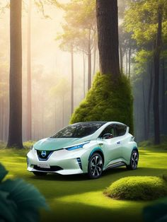
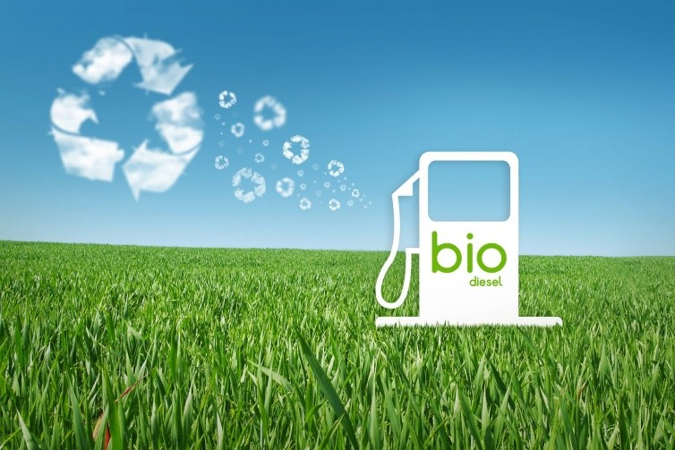

Introduction
 
Sustainable transportation is a fundamental aspect of building resilient and prosperous societies in the 21st century. It encompasses a holistic approach to mobility that considers environmental, social, and economic factors. At its essence, sustainable transportation seeks to minimize the negative impacts of transportation activities while maximizing benefits for individuals and communities alike.
One of the primary goals of sustainable transportation is to mitigate the environmental degradation caused by conventional transportation systems. By reducing greenhouse gas emissions, minimizing air and noise pollution, and conserving natural resources, sustainable transportation plays a vital role in combating climate change and preserving the planet for future generations. Embracing alternative fuels, such as electricity, hydrogen, and biofuels, and investing in energy-efficient technologies are pivotal steps in this transition.